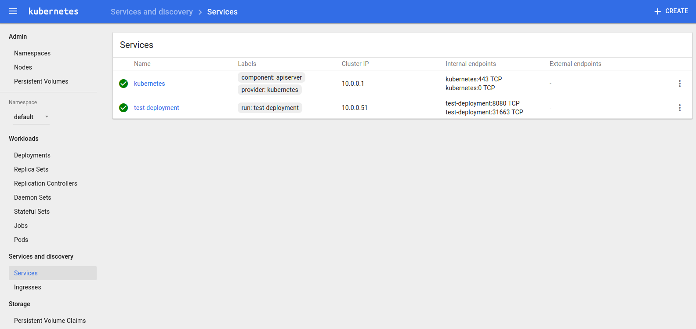

Сегодня мы разберёмся, как создать свой кластер для java-приложений используя Minikube - инструмент для локального запуска Kubernetes.
Основные этапы:Для работы Minikube необходимо скачать и установить VirtualBox. Найти его можно здесь.
Далее устанавливаем сам Minikube:
# curl -Lo minikube https://storage.googleapis.com/minikube/releases/latest/minikube-darwin-amd64 && chmod +x minikube && sudo mv minikube /usr/local/bin/
И Docker, инструмент, который мы будем использовать для создания образа нашего приложения:
# apt-get install docker
Запускаем Minikube:
# minikube start
Видим виртуальную машину с операционной системой Boot2Docker. Она и является нашим кластером с одним узлом.
Следующим шагом будет упаковка и запуск приложения. Воспользуемся уже готовым spring-проектом.
# git clone https://github.com/dimonik/spring_hello_app.git
# cd spring_hello_app
# mvn package
Заходим в папку /spring_hello_app/target и создаём файл с названием 'Dockerfile', который должен содержать в себе следующее:
FROM java:8
MAINTAINER Letiko hello@letiko.com
ADD tutorial-0.0.1-SNAPSHOT.jar tutorial.jar
EXPOSE 8080
ENTRYPOINT ["java","-jar","tutorial.jar"]
В этой же папке открываем консоль. Теперь нам нужно создать образ приложения. Но для того чтобы он был создан и для виртуальной машины, выполняем команду:
# eval #(minikube docker-env)
При создании образа необходимо обратить внимание на то, что название, которое следует после тега '-t' может быть любым, однако оно должно содержать в себе суффикс ':v'. Иначе на следующих шагах могут возникнуть проблемы из-за того, что Minikube будет пытаться найти образ исключительно в интернете, а нам этого не нужно.
# docker build -t tutorial-app:v1 .
Далее разворачиваем созданное приложение в кластере:
# kubectl run test-deployment --image=tutorial-app:v1 --port=8080 --replicas=1
Название (test-deployment) может быть произвольным,
'image' - имя нашего образа, созданного на предыдущем шаге,
'port' - порт для текущего java-приложения,
'replicas' - количество реплик, а соответственно и pod'ов.
Вот мы и запустили наше приложение внтури кластера. Однако сейчас оно доступно лишь в его пределах:
Это может быть приемлемо, если приложение выполняет какую-то внутреннюю логику, и никому извне не нужно знать о его существовании. Мы же хотим увидеть его, потому создаём сервис:
# kubectl expose deployment test-deployment --target-port=8080 --type=NodePort
По умолчанию установлен тип сервиса 'ClusterIP', что делать его доступным лишь в пределах кластера. Мы выбираем 'NodePort', чтобы получить доступ к нашему приложению. Больше про типы можно почитать в статье про сервисы по ссылке выше.
Всё, что мы проделали, можно увидеть в стандартной панели от Kubernetes. Там же, во вкладке 'Services', есть порт нашего сервиса, который задаётся случайным образом, и который следует изменить в дальнейшем.
# minikube dashboard
Проверяем наше приложение, переходим по адресу 192.168.99.100:31663 и видим:
Вот и всё, мы запустили наше java-приложение в кластере.